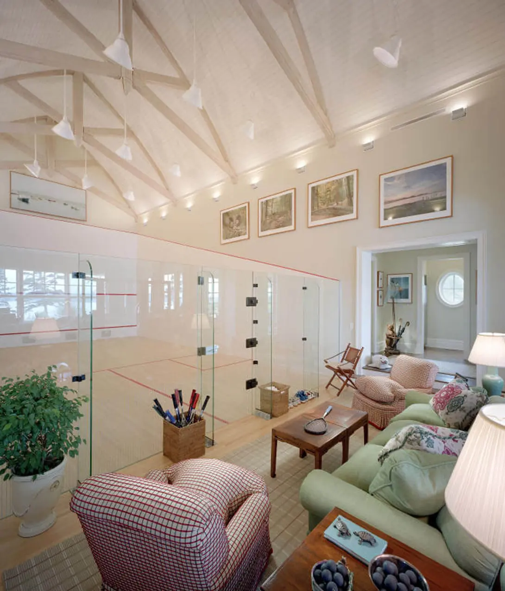
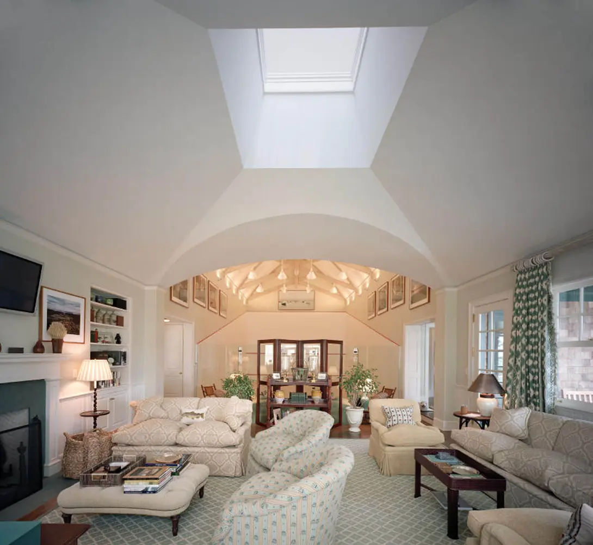
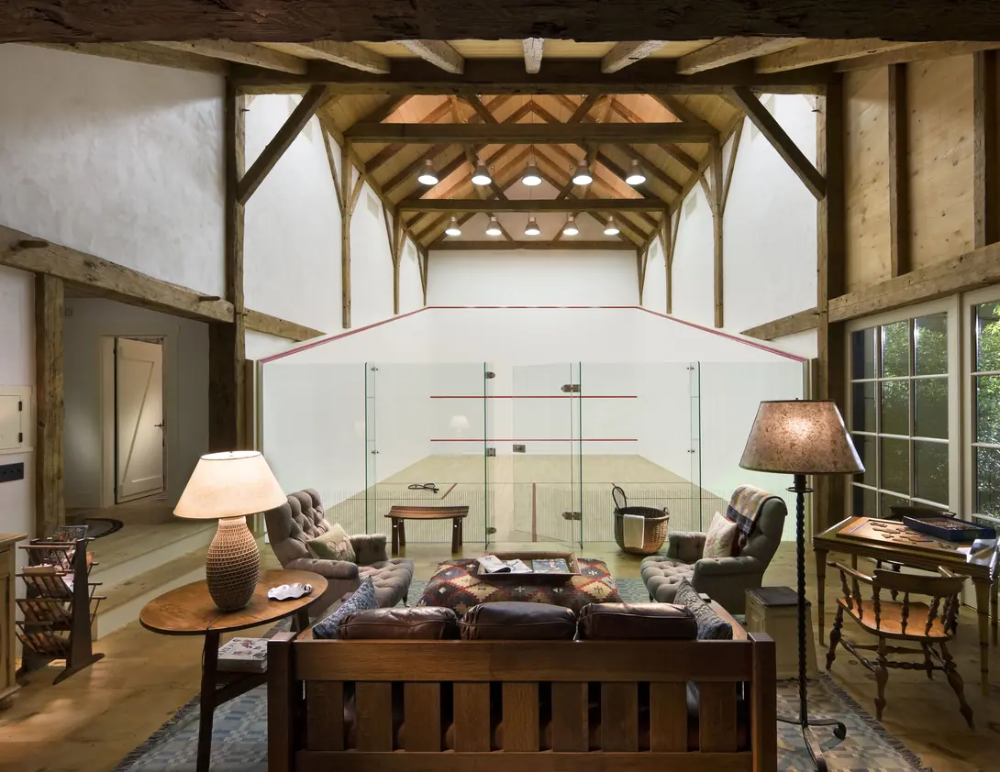
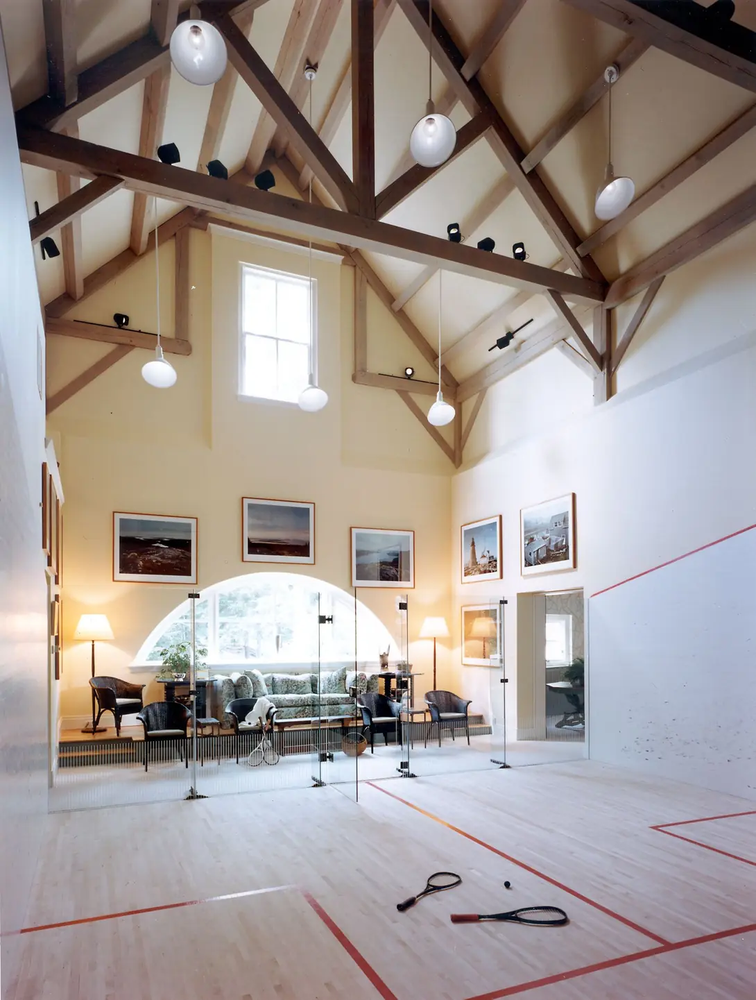

Beautiful Squash Courts – Part 1
Many of us dream of owning our own squash court. Very few of us get to live that dream. Here are three private squash courts I have found images of.

This is the first in a short series of articles about beautiful squash courts. I first found these images while browsing the internet and then decided to actually look for more courts like them. There’s no “order” to the courts and I am just choosing each three courts per article randomly. Although I will say, these first three are probably my favourite.
Originally, I posted them on my Instagram account, as well as my other social media accounts, with the hashtag #BeautifulSquashCourts and they have generated plenty of interest and discussion. Anyway, I hope you like these ones. Dream on!
Bearings in Maine, USA
Don’t you just love the box of rackets near the door? What about the line of shoes on the other side? This feels like a family court. The comfort of the sofas contrasts nicely with the harsh reality of a tough squash match. Anyway, this is absolutely gorgeous.
 Martha’s Vineyard, Massachusetts, USA
This beautiful private squash court is a little less “soft” than the previous one. The bare walls, darker brown furnishings and simpler lighting all give the impression of more rustic approach. I have the impression that it would be colder. Without doubt, it’s still beautiful.
No Information – ?
Unfortunately, I have no information about this squash court. It’s reminiscent of the first court in this article, but seems to have more natural light. If you know anything about it, please let me know.
Final Thoughts
Being able to walk onto court anytime you like must be a wonderful feeling.
Continue Reading
• Previous: What Is Your Squash Mantra?
• Next: What's The Difference Between "Not Up" and "Down" In Squash?
• Random: Take A Chance!
• Popular: Why Do I have To Watch The Ball Hit My Strings?